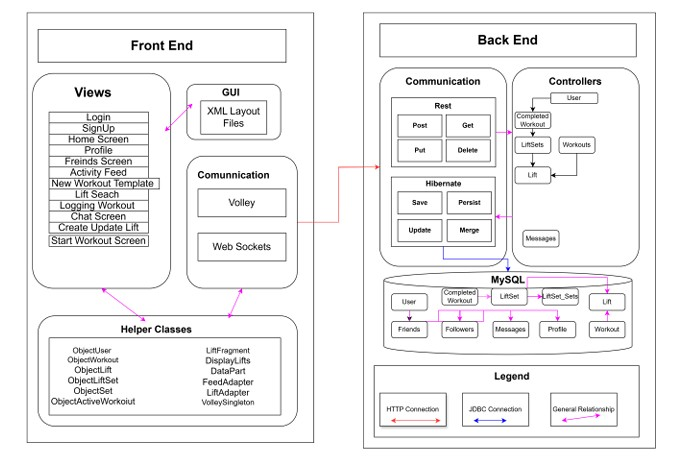
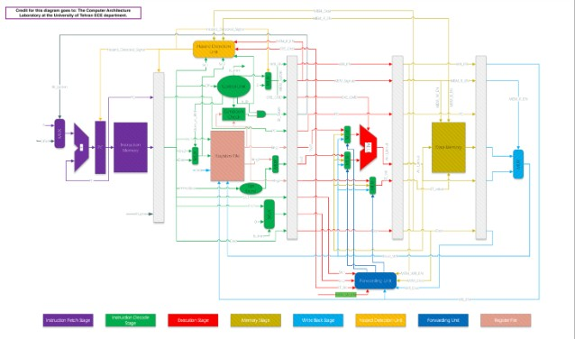
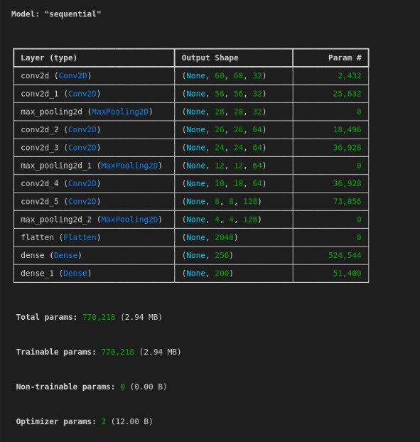

Project 1: Sweat Stats
Description: Sweat Stats was an app that I helped to develop with a team in ComS 3090. The app was built to help log workouts for clients. Within the app we had the ability for clients to create custom workout templates, then for each completion they could individually add Weight and Repetition values for each set. The app also came with a variety of other features, such as adding friends to view their progress and an system that tracked overall progress.
My Role: My role was on the backend part of the app development. My primary role was was managing the MySQL database, where I created all of the custom imbedded objects we would need in order to allow clients to both create templetes of exercises as well as track individual sessions with set information.
Skills Gained:
- Working in a team to develop a larger application
- Creating and Managing MySQL tables
- Testing with Postman
Resources Used: IntelliJ, MySQL, Postman, Springboot, Java
Project 2: CPRE 3810 Final
Description: Our final project in CPRE 381 was to develop a fully functional processor in VHDL code that supported pipelining and a given set of 33 machine code instuctions
My Role: My role in the project was to help develop the control logic to take the insturction given and output the correct bits to tell seperate components whether or not to pass variables, access memory, etc.
Skills Gained:
- Strong Understanding of individual processer components
- VHDL Coding
Resources Used: VS code, VHDL
Project 3: CPRE 5870 Lab 2
Description: In this lab we implemented a Naive DNN Inference model logic through our own code. We programmed layers such as convolutional, max pooling, dense, and flatten. While our implementation was not optimized, we were able to acheive nearly a 100% accuracy match to given output data, meaning our model was able to match Tensorflow results.
My Role: I was responsible for troubleshooting, analysis, and testing of our model. While my partner implemented the initial logic, I would troubleshoot errors and calculate latency and expected memory usage.
Skills Gained:
- Tensorflow and Tesnorboard
- Understanding of basic DNN models and independent layers like convolution
- Practice using Keras to build our model and perform matrix operations
Resources Used: Tensorflow, VSCode, Keras, Tensorboard
Project 4: MySTEM Growth
Description: MySTEM Growth is a survey applicaton based of a survey intially developed by the University of Iowa. It is made to analyze the skillsets and outlook of undergraduate researchers when both entering a research project and at its completion, and compare the results of the two time. This is to help researchers and people in charge of the projects improve their research studies and improve learning.
My Role: My role is as Team Coordinator and Backend/Cloud development. I am in charge of making sure tasks are being completed, and working with a partner to improve our database and hosting capabilites for the site.
Skills Gained:
- Leadership experience
- Experience with AWS
- Developing an Academic Application
Resources Used: AWS